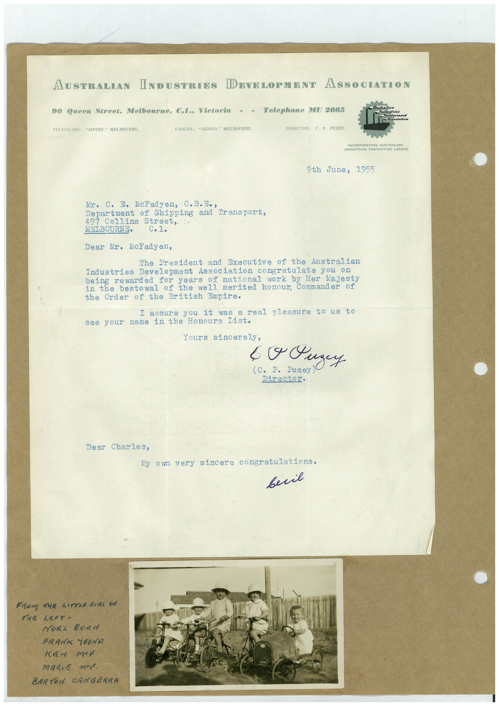

Book 1 · scan 105


Description
Transcription
Context
Review notes
Compare the machine draft with the scan. Handwriting and names need human review.
Artifacts
Edit the artifacts field in this note’s frontmatter to change these records. This summary is generated.
B01-S105-A01 — Letter, Photo & Handwritten note — Book 1, scan 105
Types: Typed document, Letter, Photo, Handwritten note
Scope: Whole scanned page; individual items can be split out during review.
Caption: Not mapped yet.
Caption source: Not recorded yet.
Caption status: unmapped
Machine transcription
AUSTRALIAN INDUSTEIES DEVELOPMENT ASSOCIATION 90 Queen Street. Melbourne, C.I., Victoria - - Telephone MW 2085 TELECRAMS: "AIDIND." MELBOURNE. CABLES: "AIDIND. MELBOURNE. DIRECTOR: C. P. PUZEY. SINCOBRARATING AUSTRALIAN INDUSTRIES PROTECTION LEAGUE 9th June, 1955 Mr. C. E. Ncladyen, C.B.Eo, Department of Shipping and Transport, 497 Collins Street, MELBOURNE• Dear Mr. McFadyen, The President and Executive of the Australian Industries Development Association congratulate you on being rewarded for years of national work by Her Majesty in the bestowal of the well merited honour, Commander of the Order of the British Empire. I assure you it was a real pleasure to us to see your name in the Honours list. Yours sincerely, C. P. Fuzey Director. Dear Charles, My own very sincere congratulations. весів FROM THE LITTLE GIRL ON THE LEFT- HOEL BORd FRANK YEEND KEN mEF MARIE Mer. BARTON CAMBERRA